预测未来 token 的顺序可以改善语言建模
Zayd M. K. Zuhri1，Erland Hilman Fuadi1，Alham Fikri Aji1
摘要
多 token 预测（MTP）被提出作为辅助目标，改善语言模型训练中的下一 token 预测（NTP），但改进并不一致，在标准 NLP 基准上表现不佳。我们发现，作为辅助损失，MTP 对未来 token 的精确预测过于困难。因此，我们提出 token 顺序预测（TOP），用学习排序损失训练模型，按远近排列未来 token。相比 MTP 的多个 transformer 层，TOP 只需额外一个 unembedding 层。我们使用 NTP、MTP、DeepSeek MTP（DS-MTP）和 TOP 目标，预训练了 340M、1.8B、7B 参数模型。在九个标准 NLP 基准上，TOP 总体优于 NTP、MTP、DS-MTP，即使扩大规模也是如此。在数学和代码数据上继续训练的 TOP 模型，在 4 个相关基准上也更好。在合成星形图任务中，TOP 可以在 NTP、MTP、DS-MTP 均失败的图上实现寻路。实现和训练代码见 https://github.com/zaydzuhri/token-order-prediction。
1. 引言
当前大语言模型（LLM）训练时预测序列中的下一 token，这是一项称为下一 token 预测（NTP）的无监督学习任务（Shannon，1948；1951）。虽然简单，NTP 在构建强大语言模型方面极为成功，使模型能够解决复杂任务，甚至对上下文进行推理。
然而，NTP 近年来受到各种批评。LeCun（2024）提出的一个著名观点是，NTP 在推理时每个时间步都会累积错误，最终不可避免地导致准确率大幅下降。但 Bachmann & Nagarajan（2024）反驳了这一观点，认为 NTP 的主要问题不是推理时的错误累积，而是 teacher forcing 从一开始就无法学会准确的下一 token 预测器。这推动了对替代或辅助 LLM 训练目标的研究。
在 ProphetNet（Qi et al.，2020）等思路基础上，多 token 预测（MTP）（Gloeckle et al.，2024）成为改善 LLM 训练中 NTP 的一种相对成功的辅助学习任务。例如，DeepSeek-V3（DeepSeek-AI et al.，2024）采用了其变体。MTP 在 transformer（Bahdanau et al.，2014；Vaswani et al.，2017）末端添加多个头，各自预测前方不同偏移位置的 token。所有 MTP 头共享同一 transformer 主干，希望（下页续）
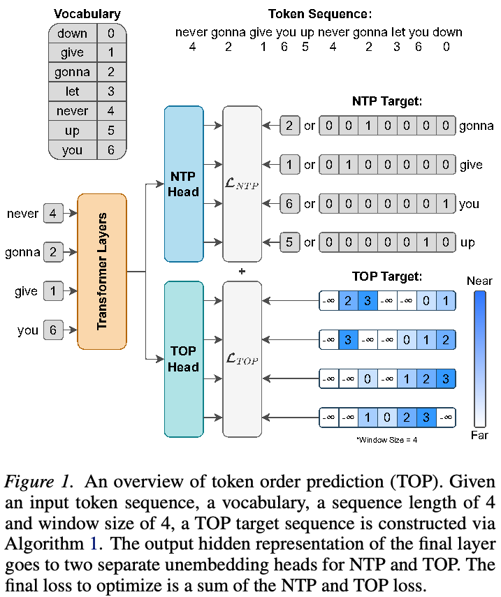
1Mohamed Bin Zayed University of Artificial Intelligence，阿拉伯联合酋长国阿布扎比。通信作者：Zayd M. K. Zuhri <zayd.zuhri@mbzuai.ac.ae>。
第 43 届国际机器学习大会论文集，韩国首尔。PMLR 306，2026。版权 2026，归作者所有。
（接上页）这些辅助头使模型学到更好的内部表示，不仅考虑紧接着的下一 token，也考虑后面可能出现的未来 token。研究已表明，MTP 能改善编程和数学等需要前瞻的生成任务上的 LLM 性能。
不过，MTP 在一般 NLP 任务上的结果不一致，在标准下游基准上表现不佳（Gloeckle et al.，2024，附录 G）。我们希望通过不同辅助训练目标改进 MTP，目标相同：通过学习预测下一 token 之后的内容，增强语言建模。但相比精确预测多个未来 token，我们认为，用学习排序损失预测未来 token 在序列中的顺序，是更好的训练目标。本文贡献如下：
- 提出 token 顺序预测（TOP），作为 NTP 之外的新辅助训练损失，全面改善语言建模。
- 对 NTP、MTP、DeepSeek MTP（DS-MTP）、TOP 四种训练策略，分别在最高 104B 个 token 上预训练 340M、1.8B、7B 参数模型。
- 在标准 NLP 基准上评估，表明即使扩大规模，TOP 仍优于 NTP、MTP、DS-MTP。在数学和代码上继续训练，也观察到 TOP 在生成式基准上的收益。此外，合成星形图寻路任务表明，TOP 能解决其他三种方法无法解决的前瞻问题。
2. 背景
下一 token 预测（NTP）是当今语言模型的标准训练目标，通过优化整个序列长度上的交叉熵损失学习。给定序列长度 \(T\)、模型维度 \(D\)、词表大小 \(V\)，以及输入 token 序列 \(\mathbf{x}=\{x_0,\ldots,x_{T+1}\mid x_i\in\mathbb{Z}\}\)，损失为：
\[\mathcal{L}_{\mathrm{NTP}}=-\sum_{t=0}^T\log(P_\theta(x_{t+1}\mid x_{0:t})).\tag{1}\]其中 \(P_\theta\) 是参数为 \(\theta\) 的语言模型输出的概率。给定该模型，下一 token \(x_{t+1}\) 的概率为：
\[P_\theta(x_{t+1}\mid x_{0:t})=\operatorname{softmax}(U_{\mathrm{NTP}}(h_t^L))[x_{t+1}].\tag{2}\]隐藏表示 \(h_t^L\in\mathbb{R}^D\) 由以 \(x_{0:t}\) 为条件、计算至最后一层 \(L\) 的 transformer 生成；NTP 头 \(U_{\mathrm{NTP}}:\mathbb{R}^D\to\mathbb{R}^V\) 是将 \(h_t^L\) 投影到词表的线性 unembedding 层。概率取目标 token 索引 \([x_{t+1}]\) 处的值。
多 token 预测（MTP）（Gloeckle et al.，2024）是一种架构修改，添加额外 MTP 头1：采用并行的单个 transformer 层，每个输出相应偏移位置的未来 token 预测。令 \(N\) 为待预测未来 token 数（包括下一 token），MTP 损失可写为：
\[\begin{aligned}\mathcal{L}_{\mathrm{MTP}}&=-\sum_{t=0}^T\log(P_\theta(x_{t+1:t+N}\mid x_{0:t}))\\&=-\sum_{t=0}^T\sum_{n=1}^N\log(P_\theta(x_{t+n}\mid x_{0:t})).\end{aligned}\tag{3}\]定义 \(h_t^{L-1}\) 为最后 transformer 层之前的隐藏表示；\(F_i\)、\(i=1,\ldots,N\) 为各未来 token 的单层 transformer MTP 头，所有头共享同一 unembedding 层，即 NTP 头 \(U_{\mathrm{NTP}}\)，则：
\[P_\theta(x_{t+n}\mid x_{0:t})=\operatorname{softmax}(U_{\mathrm{NTP}}(F_n(h_t^{L-1})))[x_{t+n}].\tag{4}\]MTP 有望改善受益于前瞻的编程、数学和摘要等生成任务。它还允许模型执行一种 self-speculative decoding，在一定程度上加快推理。不过，除了上述任务，MTP 似乎无法全面改善下游语言建模，在标准 NLP 基准上表现不佳，见其论文附录 G。即便在生成任务中，MTP 也会损害小模型性能，仅在模型超过 10 亿或 30 亿参数后开始优于 NTP。此外，原论文表明，不能任意增加预测未来 token 数：代码任务中，预测 4 个未来 token 优于 8 个。
其他 MTP 变体也已应用，例如 DeepSeek-V3 的训练方案（DeepSeek-AI et al.，2024），本文称为 DS-MTP。与原始 MTP 不同，DS-MTP 顺序排列 MTP 头。首个头之后的每个头，接收截至相应偏移位置的原始 token 经归一化后拼接的 embeddings。
\[h_t^{L-1+n}=\begin{cases}F_n(h_t^{L-1})&n=1\\F_n([\bar{h}_t^{L+n-2};\bar{e}_{t+n-1}])&2\leq n\leq N\end{cases}\tag{5}\] \[z_{t,n}=U_n(h_t^{L+n-1}).\tag{6}\]1术语澄清：遵循 Gloeckle et al.（2024），架构上 MTP 头指 transformer 块；NTP 头与 TOP 头则指线性 unembedding 层。
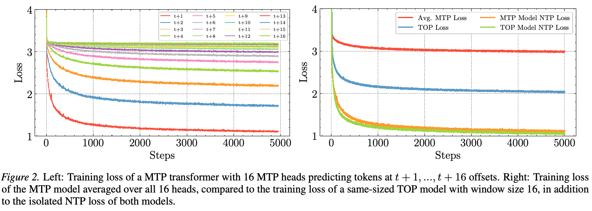
其中 \(\bar{h}=\operatorname{RMSNorm}(h)\)、\(\bar{e}_t=\operatorname{RMSNorm}(E(x_{0:t}))\) 分别表示归一化隐藏状态和 embeddings。Unembedding 层 \(E:\mathbb{Z}\to\mathbb{R}^D\) 在 MTP 头与 transformer 主干之间共享。值得注意的是，DeepSeek-V3 的 MTP 训练仅使用 \(N=3\)，即模型只学习预测接下来三个 token。这或许指向本文的关键观点：MTP 目标过难，无法作为 NTP 的有效辅助损失，尤其在前瞻值 \(N\) 较大时。
3. 动机
对于 MTP 为何只能部分改善语言建模，我们的假设是它作为学习目标过难。原始 MTP 论文（Gloeckle et al.，2024）有两个经验结果支持此观点。首先，MTP 无法改善小语言模型在编程等生成任务上的性能，表明多 token 建模需要一定能力门槛才有效；原文观察到该门槛在 1B–3B 参数范围。其次，增加 MTP 的未来 token 数，并不保证更好的整体性能。不同任务的理想预测数不同，不仅难以预先确定最大头数，也表明前瞻距离存在阈值，超过后预测难度开始妨碍而非帮助学习。
为说明此论点，我们训练一个 16M 参数、16 个 MTP 头的小 transformer，图 2 可视化各头训练损失。可以清楚看出，预测 \(t+1,\ldots,t+16\) 位置 token 的损失从下到上依次排列。相比紧接着的下一 token，越远的未来 token 损失越差，下降速度也越慢，体现精确远期预测的困难。我们认为放宽 MTP 目标，可使其成为更有用的辅助损失。与规模相似、TOP 窗口大小为 16 的模型相比，TOP 损失更低。此外，TOP 模型最终单独计算的 NTP 损失也低于 MTP 模型。
4. 方法
4.1. Token 顺序预测
我们提出 token 顺序预测（TOP），一种新的语言建模辅助训练损失。给定 token 序列 \(\mathbf{x}=\{x_0,\ldots,x_T\mid x_i\in\mathbb{Z}\}\)，构造 TOP 目标序列 \(\mathbf{y}=\{y_0,\ldots,y_T\mid y_i\in\mathbb{Z}^V\}\)，其中 \(V\) 为词表大小。每一项 \(y_t\) 为词表每个 token 赋予接近度分数。依据这些 token 在 \(\mathbf{x}\) 中 \(x_t\) 之后首次出现的早晚，分数将它们降序排列，越早出现分数越高。我们还引入窗口大小超参数 \(W\)，只评估窗口内的 token 顺序。目标序列可由算法 1 构造。
算法 1 反向扫描序列一遍，跟踪词表每个 token 下一次出现的位置，构造 TOP 目标。它将目标张量 \(\mathbf{y}\in\mathbb{R}^{T\times V}\) 初始化为 \(-\infty\)，使未来上下文中从不出现的 token 没有分数，并将辅助数组中所有 \(v\) 对应的 \(n[v]\) 设为 \(T+W\)，用作“尚未见过”的下一出现索引哨兵值。令 \(t\) 从 \(T+W-1\) 递减至 0，算法先更新 \(n[\mathbf{x}[t]]\leftarrow t\)（针对词表内有效 token，即非 padding token 且索引位于 \([0,V-1]\)），使 \(n[v]\) 始终指向相对于当前 \(t\)，token \(v\) 最近的未来出现位置。对于输出位置 \(t<T\)，随后为每个 token（下页续）
算法 1：将 token 序列转换为 TOP 目标序列
目标：对每个位置，计算每个 token 在大小为 \(W\) 的窗口内下一次出现的接近度分数。
输入：长度 \(T+W\) 的 token 序列 \(\mathbf{x}\)，词表大小 \(V\)，窗口大小 \(W\)。
输出：形状为 \((T,V)\) 的张量 \(\mathbf{y}\)。
1: Initialize y ← −∞ 2: Initialize n[v] ← T+W for all v ∈ [0,V−1] 3: for t ← T+W−1 down to 0 do 4: if x[t] ∈ [0,V−1] then 5: n[x[t]] ← t 6: end if 7: if t < T then 8: for each v ∈ [0,V−1] do 9: d ← n[v]−t 10: if 0 < d ≤ W then 11: y[t,v] ← W−d 12: end if 13: end for 14: end if 15: end for
（接上页）\(v\) 计算到其下一出现位置的距离 \(d=n[v]-t\)；若 \(0<d\leq W\)，赋予接近度分数 \(y[t,v]=W-d\)，较早出现的 token 分数更高，其他保持 \(-\infty\)。目标序列的直观说明见图 1。实际中，我们为此函数实现了优化的 Triton kernel，训练时即时创建目标序列，几乎不增加开销。也可以事先预处理整个数据集。
为训练模型按目标序列排列未来 token，我们借用学习排序文献（Pobrotyn et al.，2020）中的损失形式，具体是 ListNet（Cao et al.，2007）的列表级排序损失。对带有文档列表的输入，可定义：
\[\mathcal{L}_{\mathrm{ListNet}}=-\sum_{t=0}^T P(y_t)\log P(\hat{y}_t).\tag{9}\]其中 \(P(y_t)\) 是真实标签的 top-one 概率，\(P(\hat{y}_t)\) 是预测分数的 top-one 概率。TOP 使用 softmax 获取 top-one 概率，并用交叉熵作距离度量，因此：
\[\mathcal{L}_{\mathrm{TOP}}=-\sum_{t=0}^T\operatorname{softmax}(y_t)\cdot\log(\operatorname{softmax}(U_{\mathrm{TOP}}(h_t^L))).\tag{10}\]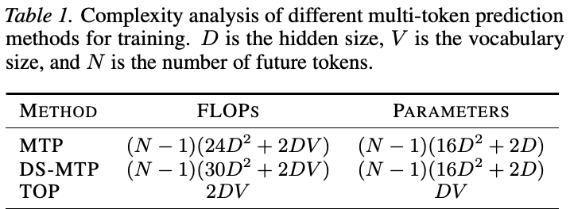
请注意，\(\operatorname{softmax}(U_{\mathrm{TOP}}(h_t^L))\) 并非仅针对下一 token 的概率分布，因此不记作 \(P_\theta\)。正确理解是，将 \(U_{\mathrm{TOP}}(h_t^L)\) 视为以接近度分数形式预测的排名，将 \(\operatorname{softmax}(\mathbf{y})\cdot\log(\operatorname{softmax}(\hat{\mathbf{y}}))\) 视为 ListNet 排序损失。TOP 不需要额外 transformer 层，但需要与 NTP 头并行的额外线性 unembedding 层 \(U_{\mathrm{TOP}}:\mathbb{R}^D\to\mathbb{R}^V\)。两个头 \(U_{\mathrm{NTP}}\)、\(U_{\mathrm{TOP}}\) 接收同一隐藏状态 \(h_t^L\)，即最后 transformer 层的输出，分别称为 NTP 头和 TOP 头。最终优化的损失就是两项之和：
\[\mathcal{L}=\mathcal{L}_{\mathrm{NTP}}+\mathcal{L}_{\mathrm{TOP}}.\tag{11}\]通过这种目标序列与排序损失，期望模型学到一种内部表示，返回未来 token 最可能的顺序，从而近似构造未来序列。这预计比精确预测特定偏移处的未来 token 更容易。
我们发现 TOP 不需要 MTP 那样的额外 transformer 块，因为 NTP 和 TOP 头主要针对同一目标：给下一 token 最高分。虽然可仅用 TOP 目标训练语言模型，但所得模型只能贪心生成。非贪心、基于概率采样的推理仍需要 NTP 头。推理时移除 TOP 头，仅用 NTP 头，模型便等价于原始 transformer 架构。
4.2. 训练复杂度分析
考虑隐藏大小 \(D\)、词表大小 \(V\) 的 unembedding 层，输入单个 token 时，该层 FLOPs 为 \(2DV\)。MTP 为每个未来 token 增加一个 transformer 块。令预测的未来 token 数为 \(N\)，标准块复杂度为 \(24D^2\)。对于 \(N\) 个额外未来 token，MTP 训练总额外计算成本为 \((N-1)(24D^2)\)。DS-MTP 在 MTP 之外还需 2 个归一化层与 1 个线性层，每个需要 \(2D^2\) FLOPs。因此总额外计算（下页续）
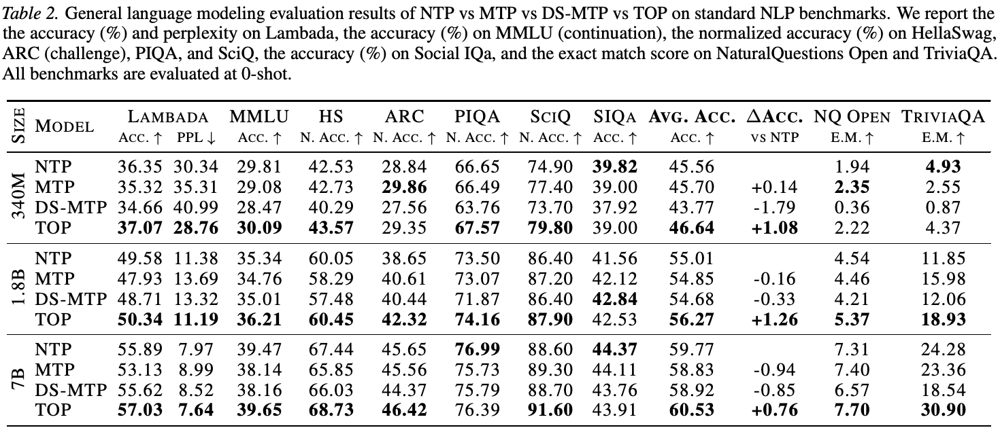
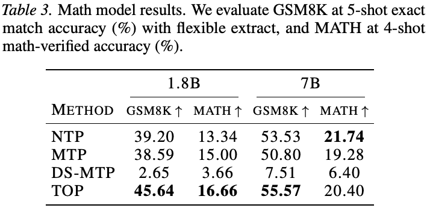
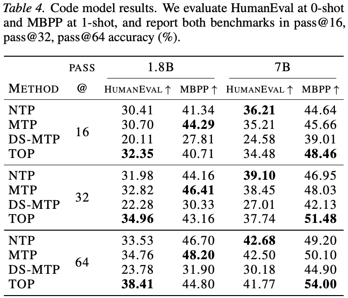
（接上页）成本为 \((N-1)(30D^2)\)。TOP 只需 1 个额外 unembedding 层，因此总额外计算成本仅为 \(2DV\)。
这让 TOP 比 MTP 更易扩展。即使调整窗口大小，也不需要额外参数。具体而言，TOP 头需要额外 \(DV\) 个参数；若标准 transformer 块采用隐藏大小 \(4D\) 的 MLP 与 2 个 RMSNorm，则 \(N\) 个 MTP 头需要 \((N-1)(16D^2+2D)\) 个参数。表 1 总结这些比较。虽然 unembedding 矩阵可能很大，但模型规模增大时，单个 unembedding 层的成本会被摊薄。实际中，我们用融合 Triton kernel，在一次计算中分块执行 unembedding 与损失计算，将开销降至最低。这一 kernel 修改自 Yang & Zhang（2024）的融合线性交叉熵损失 kernel，性能与未修改版本相同。
5. 实验与结果
5.1. 一般语言建模
我们为 NTP、MTP、DS-MTP、TOP 四种方法，分别预训练三种规模的 Llama 风格 transformer（Pre-Norm、RoPE、SwiGLU MLP）：340M、1.8B、7B。这是近似命名，各训练方法的模型实际参数量略有不同。我们尽量匹配训练时除 embedding 之外的参数量。这意味着，将 MTP 或 DS-MTP 的未来 token 数设为 4 时，共享主干要减少 3 层，补偿新增 MTP 头，与原始 MTP 论文一致。所有模型在 FineWeb-Edu（Lozhkov et al.，2024）的 sample-100BT 子集上预训练。340M 模型训练 52B 个 token，1.8B 与 7B 模型训练 104B 个 token。使用 Flame 框架（Zhang & Yang，2025）与 flash-linear-attention 仓库（Yang & Zhang，2024）实现和训练模型。各规模完整训练配置与超参数见附录 A 表 9，原始配置来自 Yang et al.（2024），并包括普通 attention 的超参数（下页续）
（接上页）。TOP 窗口设得尽可能大，但仍能可行地计算目标序列。这里设为与序列长度相同，意味着算法 1 接收两倍序列长度的输入。
我们在九个标准 NLP 基准上评估：ARC（Challenge）（Clark et al.，2018）、Lambada（Paperno et al.，2016）、PIQA（Bisk et al.，2020）、SciQ（Welbl et al.，2017）、Social IQa（Sap et al.，2019）、TriviaQA（Joshi et al.，2017）、NaturalQuestions Open（Kwiatkowski et al.，2019）、HellaSwag（Zellers et al.，2019）、MMLU（Hendrycks et al.，2021b；a），完整结果见表 2。在所有规模上，多数任务中 TOP 的整体表现优于 MTP、DS-MTP 与 NTP 基线。
我们的 MTP 复现表明，小型 MTP 模型也可取得有竞争力的结果，补充了原论文未在标准 NLP 基准报告 7B 以下模型的空白。不过，与原研究一致，7B MTP 在这些任务上表现不佳。原论文认为 MTP 能有效扩展编程任务性能，但我们发现这一扩展能力未延伸至非编程任务。相比之下，TOP 扩大到 7B 时性能提升，超越 7B NTP 和 MTP 基线，说明在更一般任务中，TOP 的性能与扩展能力更好。我们的复现也未发现 DS-MTP 比 MTP 更好。
5.2. 生成任务
我们也在数学、代码等需要向前思考的生成任务上评估 TOP。数学基准采用 MATH（Minerva 少样本变体）（Hendrycks et al.，2021c；Lewkowycz et al.，2022）和 GSM8K（Cobbe et al.，2021）；代码采用 HumanEval（Chen et al.，2021）和 MBPP（Austin et al.，2021）。预训练基础模型能力不足以胜任这些任务，因此在更多数学、代码文本上继续预训练。代码模型使用 Stack-Edu（Allal et al.，2025）Python 子集的 20B 个 token，数学模型使用 OpenMathInstruct-2（Toshniwal et al.，2024）的 4.2B 个 token。继续训练超参数见附录 A 表 10。
继续训练后，额外得到 16 个模型：分别使用 NTP、MTP、DS-MTP、TOP 预训练与继续训练，在 1.8B、7B 两种规模上各有一个数学和一个代码模型。数学结果见表 3，代码结果见表 4。TOP 在生成任务中同样占优。数学上，TOP 1.8B 以明显优势超过其他所有模型；TOP 7B 在 GSM8K 领先，在 MATH 超过 MTP 和 DS-MTP。代码生成结果虽更加混合，但 TOP 1.8B、7B 分别在 HumanEval、MBPP 最好。我们注意到 DS-MTP 的表现异常低，怀疑是过拟合，因为其基础模型相对良好。附录 B 的损失曲线显示 DS-MTP 训练损失正常；尽管下游表现更差，它测得的 NTP 训练损失通常低于 MTP。
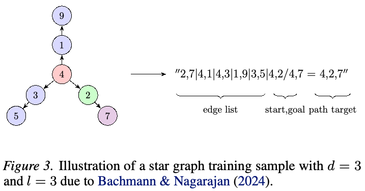
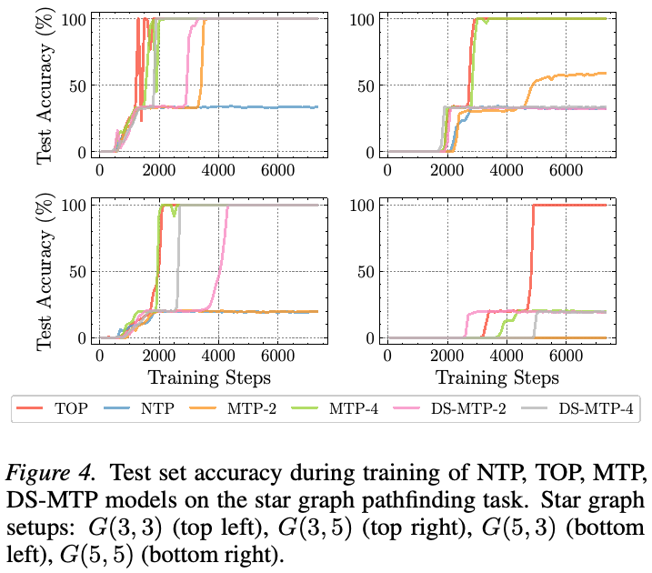
5.3. 星形图任务
除一般语言建模，我们也在合成星形图寻路任务上评估 TOP。该任务由 Bachmann & Nagarajan（2024）提出，强调 NTP 训练的弱点：模型无法学到正确的前瞻解法。给定星形图 \(G(d,l)\)，从起点伸出 \(d\) 条长度为 \(l\) 的路径，任务是寻找起点到目标节点的路径。训练样例见图 3。
我们为 NTP、TOP、MTP-2、MTP-4、DS-MTP-2、DS-MTP-4 六个训练目标，训练 8 层、embedding 大小 384、6 个 attention 头的标准 transformer。
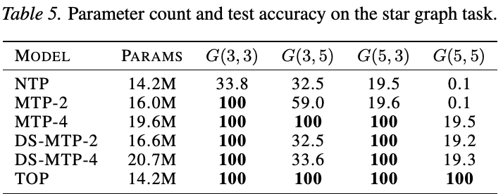
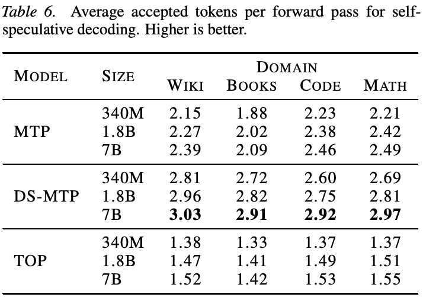
MTP 与 DS-MTP 模型采用不同的未来 token 数，即两个和四个 MTP 头。请注意，此任务中模型太小，因而只从主干减去一层，再添加 MTP 头，导致 MTP 模型参数量大于 NTP 与 TOP。在 \(G(3,3)\)、\(G(3,5)\)、\(G(5,3)\)、\(G(5,5)\) 四种星形图上训练，\(N=30\)，即每个节点标签从 30 个标签（token）中均匀采样。每种设置生成 300,000 个训练样本、10,000 个测试样本，训练 100 个 epoch 至收敛。所有模型 batch 大小为 4096，学习率 0.003，warmup 1500 步，再余弦衰减至 0.001。
结果见表 5 与图 4。与 Bachmann & Nagarajan（2024）类似，NTP 各项表现均差，无法学会适当的前瞻机制。MTP 的有效性也依赖头数，例如四个头有效，两个则不足，尤其在路径更长的图上。但 TOP 最稳健。在 \(G(5,5)\) 上，TOP 是唯一测试准确率满分的模型，甚至四个头的 MTP 与 DS-MTP 也失败。
5.4. Self-speculative decoding
Speculative decoding（Stern et al.，2018）先用小模型生成预测，再用原模型验证，以加速推理。MTP 可同时利用所有头预测未来 token，再使用同一模型的第二次前向传播验证。由于预测和验证使用同一模型，称为 self-speculative decoding。TOP 虽旨在仅用于训练、改善学习，我们也探索用 TOP 头执行 self-speculative decoding。具体而言，按接近度分数排列 TOP 预测 token，构造未来序列，附加至输入，再进行一次前向传播，与 NTP 头预测比较最长公共前缀，即接受率。
我们取所有 TOP、MTP、DS-MTP 模型，在不同领域文本上评估 self-speculative decoding 潜力。每个领域取 5000 个随机文本片段，计算每次验证前向传播平均接受 token 数。结果见表 6。显然，TOP 不如 MTP 和 DS-MTP；TOP 7B 的最高接受率为 1.54，而 MTP 7B 最高为 2.49，仍略低于原论文四头 MTP 的报告值；DS-MTP 7B 则高达 3.03。我们怀疑 TOP 表现较弱，是因为无法顺序预测重复 token，这仍是开放问题。
5.5. 探索其他配置
5.5.1. 窗口大小
我们研究 TOP 训练中改变窗口大小的影响。按照第 5.1 节设置预训练 340M 模型，只将窗口改为 4、16、128、1024、4096。表 7 报告下游结果，也与 NTP 基线比较。各基准结果有所不同，我们推测每项任务可能受益于不同前瞻量。不过所有窗口都优于 NTP。实际使用 TOP 时，建议针对模型与数据预先调节窗口。与 MTP 不同，更大窗口不需要增加参数。
5.5.2. 损失加权比例
我们也探索组合 NTP 和 TOP 损失时改变二者比例。具体将组合损失参数化为 \(\mathcal{L}=(1-\alpha)\mathcal{L}_{\mathrm{NTP}}+\alpha\mathcal{L}_{\mathrm{TOP}}\)，其中 \(\alpha\) 控制两者的相对（下页续）
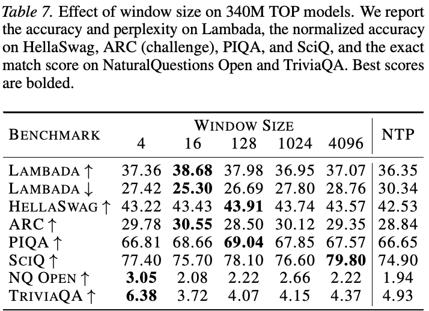
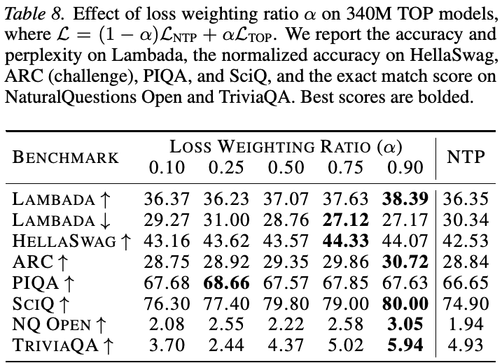
（接上页）TOP 目标权重。我们按第 5.1 节配置预训练 340M 模型，改变 \(\alpha\in\{0.1,0.25,0.5,0.75,0.9\}\)。令人意外的是，表 8 与 NTP 基线的比较表明，更高 TOP 权重通常改善性能，\(\alpha=0.9\) 在多数基准最好。这说明 TOP 提供的学习信号比最初预期更强，默认等权（\(\alpha=0.5\)）可能较保守。实际中，我们也建议预先调整损失加权比例。
6. 相关工作
6.1. 语言模型损失
许多工作探索语言建模损失的变体，多用于编码器模型。掩码语言建模（MLM）随机遮蔽输入 token，训练模型根据双向上下文恢复（Devlin et al.，2019）。例如，T5 采用去噪 span-corruption 目标，以哨兵 token 替换连续片段，要求重建片段（Raffel et al.，2020），得到更短目标序列、更快训练。XLNet 的重排语言建模采样随机自回归顺序，在保持自回归的同时捕捉双向依赖（Yang et al.，2019）。类似地，BART 的去噪自编码预训练破坏文本，例如打乱句子或填补遮蔽片段，再学习重建原文（Lewis et al.，2020）。UL2（Tay et al.，2023）进一步用混合去噪器目标统一这些思想，交替使用各种片段和前缀破坏方案，提高跨任务稳健性。RETRO 等检索增强模型在预训练时加入最近邻检索，以检索文档块为条件生成，降低困惑度，并支持便捷知识更新（Borgeaud et al.，2022）。其他替代方法包括 ELECTRA（Clark et al.，2020）的替换 token 检测：模型看到合理替代项，而非被遮蔽 token，必须识别哪些 token 已被替换。
6.2. 多 token 预测
研究表明，下一 token 预测因 teacher forcing 而限制长程规划。Teacher forcing 可能无法学到准确的下一 token 预测器，妨碍模型规划多个 token 以后的内容（Bachmann & Nagarajan，2024），促使研究者探索替代或辅助训练目标。MTP 联合预测多个未来 token，改善前瞻和规划（Gloeckle et al.，2024）。DeepSeek-V3（DeepSeek-AI et al.，2024）、Ling-V2（inclusionAI，2025）等近期大型模型采用了 MTP，还能通过 self-speculative decoding 加速推理。
MTP 有多个变体。DeepSeek-V3 用小前瞻窗口（\(N=3\)）的顺序预测机制提高 decoding 效率（DeepSeek-AI et al.，2024）。其他多 token 感知方法包括用 register tokens 将 NTP 模型转为 MTP 模型（Gerontopoulos et al.，2025），以及在连续空间探索并行推理（Gozeten et al.，2025）。Ahn et al.（2025）通过精心限制 MTP 头的架构瓶颈，预测未来 token 的联合概率。Yin et al.（2024）提出 Semformer，也评估一个词袋（BoW）辅助目标，预测无序目标 token 集合；但 BoW 无法取得满分准确率。Frydenlund（2025）通过“监督掺杂”研究星形图任务，提出替代序列预测损失，包括用成对 hinge 排序损失对未来目标 token 排序的多 token 目标。最后，Mahajan et al.（2025）提出未来摘要预测（FSP）的两种变体，（下页续）
（接上页）BoW 和 RevLM。其中 FSP-BoW 同样预测无序词袋。TOP 与这些工作不同：它是一般 LLM 预训练目标，用列表级排序损失，按窗口内的接近程度排列词表 token，只需额外线性 unembedding 头，并在一般 NLP、数学、代码、星形图基准上进行大规模评估。
7. 局限性
受计算资源限制，我们无法用更多数据或更大模型预训练。在可用的 8×H200 节点上，每个 7B 模型需训练两周。虽然本文展示 TOP 在 LLM 预训练中的潜力，但它能否有效扩展到如今更大模型、更长训练的标准，仍待验证。DS-MTP 是我们设置下的复现基线，我们避免从其较差表现得出过强结论。复现可能未完全体现该方法能达到的最佳性能。但主要结论主要由与 NTP、MTP 的比较及星形图结果支持。
8. 结论
本文提出 token 顺序预测（TOP），一种新的 LLM 预训练辅助损失。我们用更易处理的、按接近度排序未来 token 的目标，替代精确预测未来 token 的困难任务，解决 MTP 的部分局限。相比 MTP 的多个 transformer 层，TOP 只需一个额外 unembedding 层，参数更高效，也更易扩展。
在 340M、1.8B、7B 三种规模的一般语言建模实验中，TOP 在标准 NLP 基准上总体优于 NTP、MTP、DS-MTP。参数量增长时，它仍带来正向收益，表明对更大语言模型可能有价值。TOP 也改善编程和数学表现，暗示其使模型更好地理解需要向前思考的任务。
最后，我们在合成星形图寻路任务上进一步验证 TOP 的能力：在 NTP、MTP、DS-MTP 失败的图上，它学会正确前瞻解法。虽然 self-speculative decoding 不如 MTP 和 DS-MTP，这些初步结果仍表明，TOP 为利用有效辅助目标改善语言模型训练，提供另一条有前景的方向。
影响声明
本文工作的目标是推动语言建模领域发展。它可能产生许多社会影响，但我们认为没有需要在此特别强调的影响。
致谢
感谢 Manifold Labs 与 Targon Compute 为本文模型训练提供所需计算资源。
参考文献
Ahn, K., Lamb, A., and Langford, J. 多个未来 token 的高效联合预测， 2025. URL https://arxiv.org/abs/2503.21801.
Allal, L. B.,
Lozhkov, A., Bakouch, E., Bl ´azquez, G. M., Penedo, G., Tunstall, L., Marafioti, A., Kydl ´ıˇcek, H., Lajar´ın, A. P., Srivastav, V ., Lochner, J., Fahlgren, C., Nguyen, X.-S., Fourrier, C., Burtenshaw, B., Larcher, H., Zhao, H., Zakka, C., Morlon, M.,
Raffel, C., von Werra, L., and Wolf, T. SmolLM2：小模型走向强大——以数据为中心的小语言模型训练， 2025. URL https://arxiv.org/abs/2502.02737.
Austin, J., Odena, A., Nye, M., Bosma, M., Michalewski, H., Dohan, D., Jiang, E., Cai, C., Terry, M., Le, Q., et al. 使用大语言模型进行程序合成。 ArXiv preprint, abs/2108.07732, 2021. URL https://arxiv.org/abs/2108.07732.
Bachmann, G. and Nagarajan, V . 下一 token 预测的陷阱。 InForty-first International Conference on Machine Learning, ICML 2024, Vienna, Austria, July 21-27, 2024. OpenReview.net, 2024. URL https://openreview.net/forum?id=76zq8Wkl6Z.
Bahdanau, D., Cho, K., and Bengio, Y . 通过联合学习对齐与翻译实现神经机器翻译。arXiv preprint arXiv:1409.0473, 2014.
Biderman, S., Schoelkopf, H., Anthony, Q. G., Bradley, H., O’Brien, K., Hallahan, E., Khan, M. A., Purohit, S., Prashanth, U. S., Raff, E., Skowron, A., Sutawika, L., and Van Der Wal, O. Pythia：用于分析大语言模型训练与规模扩展的模型套件。 In Krause, A., Brunskill, E., Cho, K., Engelhardt, B., Sabato, S., and Scarlett, J. (eds.),Proceedings of the 40th International Conference on Machine Learning, volume 202 ofProceedings of Machine Learning Research, pp. 2397–2430. PMLR, 23–29 Jul 2023. URL https://proceedings.mlr.press/v202/biderman23a.html.
Bisk, Y .,
Zellers, R., LeBras, R., Gao, J., and Choi, Y . PIQA：自然语言中的物理常识推理。 InThe Thirty-Fourth AAAI Conference on Artificial Intelligence, AAAI 2020, The Thirty-Second Innovative Applications of Artificial Intelligence Conference, IAAI 2020, The Tenth AAAI Symposium on Educational Advances in Artificial Intelligence, EAAI 2020, New York, NY, USA, February 7-12, 2020, pp. 7432–7439. AAAI Press, 2020. URL https://aaai.org/ojs/index.php/AAAI/article/view/6239.
Borgeaud, S., Mensch, A., Hoffmann, J., Cai, T., Rutherford, E., Millican, K., van den Driessche, G., Lespiau, J., Damoc, B., Clark, A., de Las Casas, D., Guy, A., Menick, J., Ring, R., Hennigan, T., Huang, S., Maggiore, L., Jones, C., Cassirer, A., Brock, A., Paganini, M., Irving, G., Vinyals, O., Osindero, S., Simonyan, K., Rae, J. W., Elsen, E., and Sifre, L. 通过从万亿 token 中检索改善语言模型。 In Chaudhuri, K., Jegelka, S., Song, L., Szepesv´ari, C., Niu, G., and Sabato, S. (eds.),International Conference on Machine Learning, ICML 2022, 17-23 July 2022, Baltimore, Maryland, USA, volume 162 ofProceedings of Machine Learning Research, pp. 2206–2240. PMLR, 2022. URL https://proceedings.mlr.press/v162/borgeaud22a.html.
Cao, Z., Qin, T., Liu, T., Tsai, M., and Li, H. 学习排序：从成对方法到列表级方法。 In Ghahramani, Z. (ed.),Machine Learning, Proceedings of the Twenty-Fourth International Conference (ICML 2007), Corvallis, Oregon, USA, June 20-24, 2007, volume 227 ofACM International Conference Proceeding Series, pp. 129–136. ACM, 2007. doi: 10.1145/1273496.1273513. URL https://doi.org/10.1145/1273496.1273513.
Chen, M., Tworek, J., Jun, H., Yuan, Q., de Oliveira Pinto, H. P., Kaplan, J., Edwards, H., Burda, Y ., Joseph, N., Brockman, G., Ray, A., Puri, R., Krueger, G., Petrov, M., Khlaaf, H., Sastry, G., Mishkin, P., Chan, B., Gray, S., Ryder, N., Pavlov, M., Power, A., Kaiser, L., Bavarian, M., Winter, C., Tillet, P., Such, F. P., Cummings, D., Plappert, M., Chantzis, F., Barnes, E., Herbert-V oss, A., Guss, W. H., Nichol, A., Paino, A., Tezak, N., Tang, J., Babuschkin, I., Balaji, S., Jain, S., Saunders, W., Hesse, C., Carr, A. N., Leike, J., Achiam, J., Misra, V ., Morikawa, E., Radford, A., Knight, M., Brundage, M., Murati, M., Mayer, K., Welinder, P., McGrew, B., Amodei, D., McCandlish, S., Sutskever, I., and Zaremba, W. 评估在代码上训练的大语言模型。 ArXiv preprint, 2021.
Clark, K., Luong, M., Le, Q. V ., and Manning, C. D. ELECTRA：将文本编码器作为判别器而非生成器进行预训练。 In8th International Conference on Learning Representations, ICLR 2020, Addis Ababa, Ethiopia, April 26-30, 2020. OpenReview.net, 2020. URL https://openreview.net/forum?id=r1xMH1BtvB.
Clark, P., Cowhey, I., Etzioni, O., Khot, T., Sabharwal, A., Schoenick, C., and Tafjord, O. 你认为已经解决问答了吗？试试 AI2 推理挑战 ARC。ArXiv preprint, abs/1803.05457, 2018. URLhttps://arxiv.org/abs/1803.05457.
Cobbe, K., Kosaraju, V ., Bavarian, M.,
Chen, M., Jun, H., Kaiser, L., Plappert, M., Tworek, J., Hilton, J., Nakano, R., Hesse, C., and Schulman, J. 训练验证器以解决数学应用题。ArXiv preprint, abs/2110.14168, 2021. URL https://arxiv.org/abs/2110.14168.
DeepSeek-AI, Liu, A., Feng, B., Xue, B., Wang, B., Wu, B., Lu, C., Zhao, C., Deng, C., Zhang, C., Ruan, C., Dai, D., Guo, D., Yang, D., Chen, D., Ji, D., Li, E., Lin, F., Dai, F., Luo, F., Hao, G., Chen, G., Li, G., Zhang, H., Bao, H., Xu, H., Wang, H., Zhang, H., Ding, H., Xin, H., Gao, H., Li, H., Qu, H., Cai, J. L., Liang, J., Guo, J., Ni, J., Li, J., Wang, J., Chen, J., Chen, J., Yuan, J., Qiu, J., Li, J., Song, J., Dong, K., Hu, K., Gao, K., Guan, K., Huang, K., Yu, K., Wang, L., Zhang, L., Xu, L., Xia, L., Zhao, L., Wang, L., Zhang, L., Li, M., Wang, M., Zhang, M., Zhang, M., Tang, M., Li, M., Tian, N., Huang, P., Wang, P., Zhang, P., Wang, Q., Zhu, Q., Chen, Q., Du, Q., Chen, R. J., Jin, R. L., Ge, R., Zhang, R., Pan, R., Wang, R., Xu, R., Zhang, R., Chen, R., Li, S. S., Lu, S., Zhou, S., Chen, S., Wu, S., Ye, S., Ye, S., Ma, S., Wang, S., Zhou, S., Yu, S., Zhou, S., Pan, S., Wang, T., Yun, T., Pei, T., Sun, T., Xiao, W. L., Zeng, W., Zhao, W., An, W., Liu, W., Liang, W., Gao, W., Yu, W., Zhang, W., Li, X. Q., Jin, X., Wang, X., Bi, X., Liu, X., Wang, X., Shen, X., Chen, X., Zhang, X., Chen, X., Nie, X., Sun, X., Wang, X., Cheng, X., Liu, X., Xie, X., Liu, X., Yu, X., Song, X., Shan, X., Zhou, X., Yang, X., Li, X., Su, X., Lin, X., Li, Y . K., Wang, Y . Q., Wei, Y . X., Zhu, Y . X.,
Zhang, Y ., Xu, Y ., Xu, Y ., Huang, Y ., Li, Y ., Zhao, Y ., Sun, Y ., Li, Y ., Wang, Y ., Yu, Y ., Zheng, Y .,
Zhang, Y ., Shi, Y ., Xiong, Y ., He, Y ., Tang, Y ., Piao, Y ., Wang, Y ., Tan, Y ., Ma, Y ., Liu, Y ., Guo, Y ., Wu, Y ., Ou, Y ., Zhu, Y ., Wang, Y ., Gong, Y ., Zou, Y ., He, Y ., Zha, Y ., Xiong, Y ., Ma, Y ., Yan, Y ., Luo, Y ., You, Y ., Liu, Y ., Zhou, Y ., Wu, Z. F., Ren, Z. Z., Ren, Z., Sha, Z., Fu, Z., Xu, Z., Huang, Z., Zhang, Z., Xie, Z., Zhang, Z., Hao, Z., Gou, Z., Ma, Z., Yan, Z., Shao, Z., Xu, Z., Wu, Z., Zhang, Z., Li, Z., Gu, Z., Zhu, Z., Liu, Z., Li, Z., Xie, Z., Song, Z., Gao, Z., and Pan, Z. DeepSeek-V3 技术报告， 2024.
Devlin, J., Chang, M.-W., Lee, K., and Toutanova, K. BERT：面向语言理解的深度双向 transformer 预训练（文献接下页）。
（接上页文献） In Burstein, J., Doran, C., and Solorio, T. (eds.),Proceedings of the 2019 Conference of the North American Chapter of the Association for Computational Linguistics: Human Language Technologies, Volume 1 (Long and Short Papers), pp. 4171–4186, Minneapolis, Minnesota, 2019. Association for Computational Linguistics. doi: 10.18653/v1/N19-1423. URL https://aclanthology.org/N19-1423.
Frydenlund, A. 语言模型、图搜索与监督掺杂：何时更多监督反而更少，以及如何让更多真正变多。 In Che, W., Nabende, J., Shutova, E., and Pilehvar, M. T. (eds.),Proceedings of the 63rd Annual Meeting of the Association for Computational Linguistics (Volume 1: Long Papers), pp. 29011–29059, Vienna, Austria, July 2025. Association for Computational Linguistics. ISBN 979-8-89176-251-0. doi: 10.18653/v1/2025.acl-long.1409. URL https://aclanthology.org/2025.acl-long.1409/.
Gerontopoulos, A., Gidaris, S., and Komodakis, N. 多 token 预测需要 Registers， 2025. URL https://arxiv.org/abs/2505.10518.
Gloeckle, F., Idrissi, B. Y ., Rozi `ere, B., Lopez-Paz, D., and Synnaeve, G. 通过多 token 预测构建更好、更快的大语言模型。 InForty-first International Conference on Machine Learning, ICML 2024, Vienna, Austria, July 21-27, 2024. OpenReview.net, 2024. URL https://openreview.net/forum?id=pEWAcejiU2.
Gozeten, H. A., Ildiz, M. E., Zhang, X., Harutyunyan, H., Rawat, A. S., and Oymak, S. 连续 chain-of-thought 支持并行探索与推理， 2025. URL https://arxiv.org/abs/2505.23648.
Hendrycks, D., Burns, C., Basart, S., Critch, A., Li, J., Song, D., and Steinhardt, J. 将 AI 与人类共同价值观对齐。 In9th International Conference on Learning Representations, ICLR 2021, Virtual Event, Austria, May 3-7, 2021. OpenReview.net, 2021a. URL https://openreview.net/forum?id=dNy_RKzJacY.
Hendrycks, D., Burns, C., Basart, S., Zou, A., Mazeika, M., Song, D., and Steinhardt, J. 测量大规模多任务语言理解。 In9th International Conference on Learning Representations, ICLR 2021, Virtual Event, Austria, May 3-7, 2021. OpenReview.net, 2021b. URL https://openreview.net/forum?id=d7KBjmI3GmQ.
Hendrycks, D., Burns, C., Kadavath, S., Arora, A., Basart, S., Tang, E., Song, D., and Steinhardt, J. 使用 MATH 数据集测量数学解题能力。 NeurIPS, 2021c.
inclusionAI. Ling-V2. https://github.com/inclusionAI/Ling-V2, 2025. MIT License.
Joshi, M., Choi, E., Weld, D., and Zettlemoyer, L. TriviaQA：用于阅读理解的大规模远程监督挑战数据集。 In Barzilay, R. and Kan, M.-Y . (eds.),Proceedings of the 55th Annual Meeting of the Association for Computational Linguistics (Volume 1: Long Papers), pp. 1601–1611, Vancouver, Canada, 2017. Association for Computational Linguistics. doi: 10.18653/v1/P17-1147. URL https://aclanthology.org/P17-1147.
Kwiatkowski, T., Palomaki, J., Redfield, O., Collins, M., Parikh, A., Alberti, C., Epstein, D., Polosukhin, I.,
Devlin, J., Lee, K., Toutanova, K., Jones, L., Kelcey, M., Chang, M.-W., Dai, A. M., Uszkoreit, J., Le, Q., and Petrov, S. Natural Questions：问答研究基准。Transactions of the Association for Computational Linguistics, 7:452–466, 2019. doi: 10. 1162/tacl a 00276. URL https://aclanthology.org/Q19-1026.
LeCun, Y . 大语言模型需要感官 grounding 来获得意义和理解吗？ University Lecture, 2024. URL https://www.youtube.com/watch?v=x10964w00zk.
Lewis, M., Liu, Y ., Goyal, N., Ghazvininejad, M., Mohamed, A., Levy, O., Stoyanov, V ., and Zettlemoyer, L. BART：用于自然语言生成、翻译与理解的去噪序列到序列预训练。 In Jurafsky, D., Chai, J., Schluter, N., and Tetreault, J. (eds.),Proceedings of the 58th Annual Meeting of the Association for Computational Linguistics, pp. 7871–7880, Online, 2020. Association for Computational Linguistics. doi: 10.18653/v1/2020.acl-main. 703. URL https://aclanthology.org/2020.acl-main.703.
Lewkowycz, A., Andreassen, A., Dohan, D., Dyer, E., Michalewski, H., Ramasesh, V . V ., Slone, A., Anil, C., Schlag, I., Gutman-Solo, T., Wu, Y ., Neyshabur, B., GurAri, G., and Misra, V . 使用语言模型解决定量推理问题。 In Koyejo, S., Mohamed, S., Agarwal, A., Belgrave, D., Cho, K., and Oh, A. (eds.),Advances in Neural Information Processing Systems 35: Annual Conference on Neural Information Processing Systems 2022, NeurIPS 2022, New Orleans, LA, USA, November 28 - December 9, 2022, 2022.
Lozhkov, A., Ben Allal, L., von Werra, L., and Wolf, T. FineWeb-Edu：优质教育内容合集， 2024. URL https://huggingface.co/datasets/HuggingFaceFW/fineweb-edu.
Mahajan, D., Goyal, S., Idrissi, B. Y ., Pezeshki, M., Mitliagkas, I., Lopez-Paz, D., and Ahuja, K. 超越多 token 预测：使用未来摘要预训练 LLM，CoRR, abs/2510.14751, October 2025. URL http://dblp.uni-trier.de/db/journals/corr/corr2510.html#abs-2510-14751.
Paperno, D., Kruszewski, G., Lazaridou, A., Pham, Q. N., Bernardi, R., Pezzelle, S., Baroni, M., Boleda, G., and Fern´andez, R. LAMBADA 数据集， 2016.
Pobrotyn, P., Bartczak, T., Synowiec, M., Bialobrzeski, R., and Bojar, J. 基于 self-attention 的上下文感知学习排序。ArXiv preprint, abs/2005.10084, 2020. URL https://arxiv.org/abs/2005.10084.
Qi, W., Yan, Y ., Gong, Y ., Liu, D., Duan, N., Chen, J., Zhang, R., and Zhou, M. ProphetNet：通过预测未来 n-gram 进行序列到序列预训练。 In Cohn, T., He, Y ., and Liu, Y . (eds.),Findings of the Association for Computational Linguistics: EMNLP 2020, pp. 2401–2410, Online, November 2020. Association for Computational Linguistics. doi: 10.18653/v1/2020.findings-emnlp. 217. URL https://aclanthology.org/2020.findings-emnlp.217/.
Raffel, C., Shazeer, N., Roberts, A., Lee, K., Narang, S., Matena, M., Zhou, Y ., Li, W., and Liu, P. J. 利用统一的文本到文本 transformer 探索迁移学习极限。J. Mach. Learn. Res., 21:140:1–140:67, 2020. URL http://jmlr.org/papers/v21/20-074.html.
Sap, M., Rashkin, H., Chen, D., Le Bras, R., and Choi, Y . Social IQa：社交互动中的常识推理。 In Inui, K., Jiang, J., Ng, V ., and Wan, X. (eds.),Proceedings of the 2019 Conference on Empirical Methods in Natural Language Processing and the 9th International Joint Conference on Natural Language Processing (EMNLP-IJCNLP), pp. 4463–4473, Hong Kong, China, 2019. Association for Computational Linguistics. doi: 10.18653/v1/D19-1454. URL https://aclanthology.org/D19-1454.
Shannon, C. E. 通信的数学理论。 The Bell System Technical Journal, 27(3):379–423, 1948. doi: 10.1002/j.1538-7305.1948.tb01338.x.
Shannon, C. E. 印刷英语的预测与熵。 The Bell System Technical Journal, 30(1):50–64, 1951. doi: 10.1002/j.1538-7305.1951.tb01366.x.
Stern, M., Shazeer, N., and Uszkoreit, J. 深度自回归模型的分块并行 decoding。 In Bengio, S., Wallach, H. M., Larochelle, H., Grauman, K., Cesa-Bianchi, N., and Garnett, R. (eds.),Advances in Neural Information Processing Systems 31: Annual Conference on Neural Information Processing Systems 2018, NeurIPS 2018, December 3-8, 2018, Montr´eal, Canada, pp. 10107–10116, 2018.
Tay, Y ., Dehghani, M., Tran, V . Q., Garcia, X., Wei, J., Wang, X., Chung, H. W., Bahri, D., Schuster, T., Zheng, H. S., Zhou, D., Houlsby, N., and Metzler, D. UL2：统一语言学习范式。 InThe Eleventh International Conference on Learning Representations, ICLR 2023, Kigali, Rwanda, May 1-5, 2023. OpenReview.net, 2023. URL https://openreview.net/pdf?id=6ruVLB727MC.
Toshniwal, S., Du, W., Moshkov, I., Kisacanin, B., Ayrapetyan, A., and Gitman, I. OpenMathInstruct-2：利用海量开源指令数据加速数学 AI。ArXiv preprint, abs/2410.01560, 2024. URLhttps://arxiv.org/abs/2410.01560.
Vaswani, A., Shazeer, N., Parmar, N., Uszkoreit, J., Jones, L., Gomez, A. N., Kaiser, L. u., and Polosukhin, I. Attention 就足够了。 In Guyon, I., Luxburg, U. V ., Bengio, S., Wallach, H., Fergus, R., Vishwanathan, S., and Garnett, R. (eds.),Advances in Neural Information Processing Systems, volume 30. Curran Associates, Inc., 2017. URL https://proceedings.neurips.cc/paper_files/paper/2017/file/3f5ee243547dee91fbd053c1c4a845aa-Paper.pdf.
Welbl, J., Liu, N. F., and Gardner, M. 众包构建科学多项选择题。 In Derczynski, L., Xu, W., Ritter, A., and Baldwin, T. (eds.),Proceedings of the 3rd Workshop on Noisy User-generated Text, pp. 94–106, Copenhagen, Denmark, 2017. Association for Computational Linguistics. doi: 10.18653/v1/W17-4413. URLhttps://aclanthology.org/W17-4413.
Yang, S. and
Zhang, Y . FLA：基于 Triton 的线性 attention 机制硬件高效实现库， 2024. URL https://github.com/fla-org/flash-linear-attention.
Yang, S., Wang, B.,
Zhang, Y ., Shen, Y ., and Kim, Y . 沿序列长度并行化采用 delta rule 的线性 transformer。 InThe Thirty-eighth Annual Conference on Neural Information Processing Systems, 2024. URL https://openreview.net/forum?id=y8Rm4VNRPH.
Yang, Z., Dai, Z., Yang, Y ., Carbonell, J., Salakhutdinov, R. R., and Le, Q. V . XLNet：面向语言理解的广义自回归预训练。 In Wallach, H., Larochelle, H., Beygelzimer, A., d'Alch´e-Buc, F., Fox, E., and Garnett, R. (eds.),Advances in Neural Information Processing Systems, volume 32. Curran Associates, Inc.,
Yin, Y ., Ding, J., Song, K., and
Zhang, Y . Semformer：具有语义规划的 transformer 语言模型。 In Al-Onaizan, Y ., Bansal, M., and Chen, Y .-N. (eds.),Proceedings of the 2024 Conference on Empirical Methods in Natural Language Processing, pp. 18669–18680, Miami, Florida, USA, November 2024. Association for Computational Linguistics. doi: 10.18653/v1/2024.emnlp-main. 1039. URL https://aclanthology.org/2024.emnlp-main.1039/.
Zellers, R., Holtzman, A.,
Bisk, Y ., Farhadi, A., and Choi, Y . HellaSwag：机器真的能补完你的句子吗？ In Korhonen, A., Traum, D., and M `arquez, L. (eds.),Proceedings of the 57th Annual Meeting of the Association for Computational Linguistics, pp. 4791– 4800, Florence, Italy, 2019. Association for Computational Linguistics. doi: 10.18653/v1/P19-1472. URL https://aclanthology.org/P19-1472.
Zhang, Y . and
Yang, S. Flame：让 Flash 语言建模变得简单， January 2025. URL https://github.com/fla-org/flame.
A. 训练配置与超参数
表 9 给出所有模型的训练配置和超参数，下方表 10 给出数学与代码继续训练的超参数。各规模架构配置取自 Flame（Zhang & Yang，2025），基于 DeltaNet（Yang et al.，2024）等既有工作的成熟设置，确保报告的收益并非随意调参所致。学习率等具体优化超参数取自 Pythia 模型套件（Biderman et al.，2023），其中包含与我们规模相近、调优充分的模型。
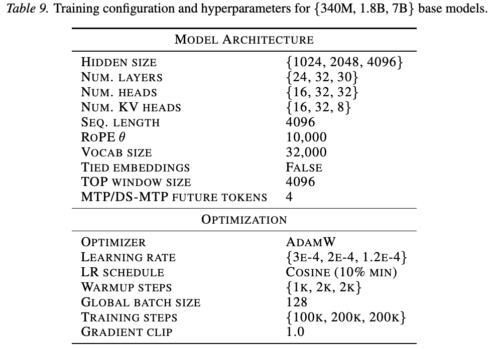
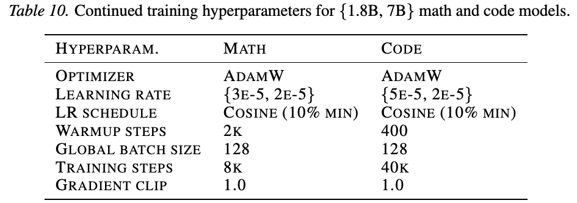
B. 预训练与继续训练损失
我们展示各模型训练损失，配置和超参数见附录 A。
TOP 架构报告三项损失：（1）NTP 头的 NTP 损失（式 1），（2）TOP 损失（式 10），（3）总损失，即二者之和（式 11）。
MTP 与 DS-MTP 报告两项：（1）测得的 NTP 损失，即 MTP 或 DS-MTP 首个头的损失（式 3）；（2）总损失，即所有头损失之和。
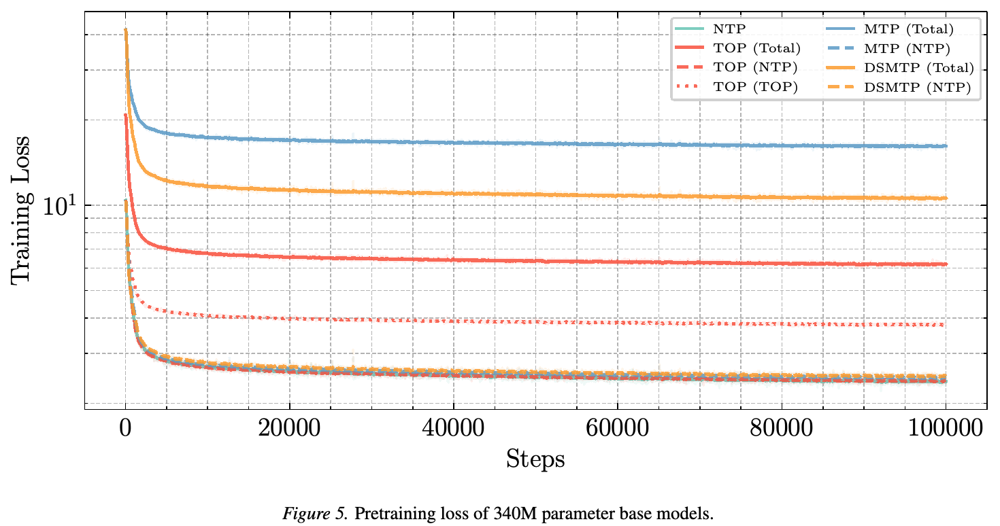
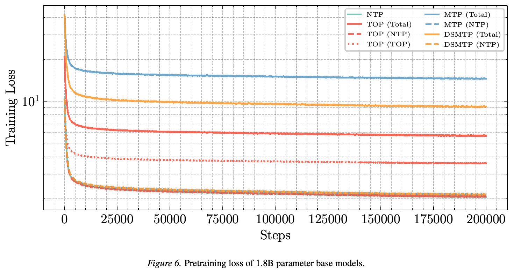
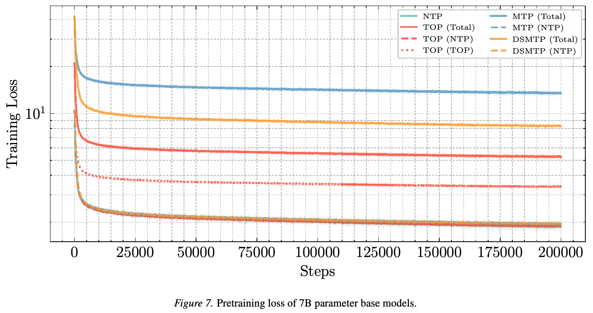
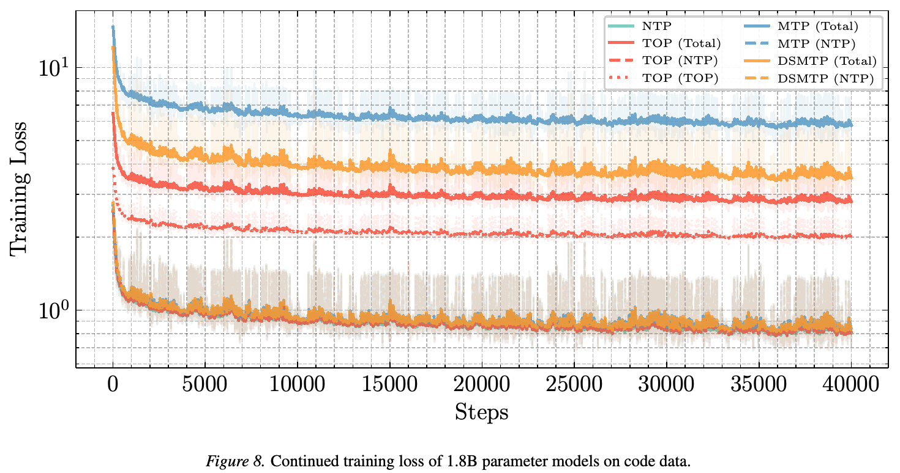
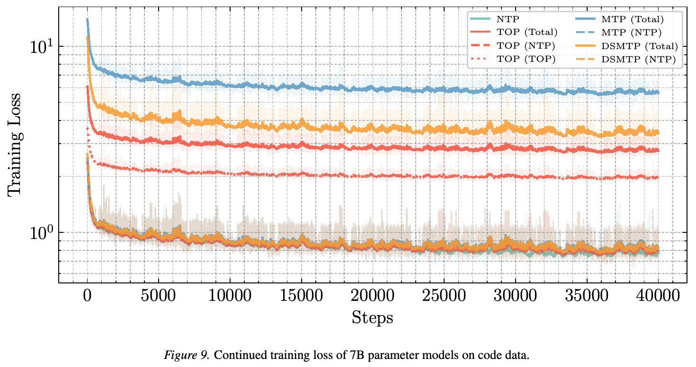
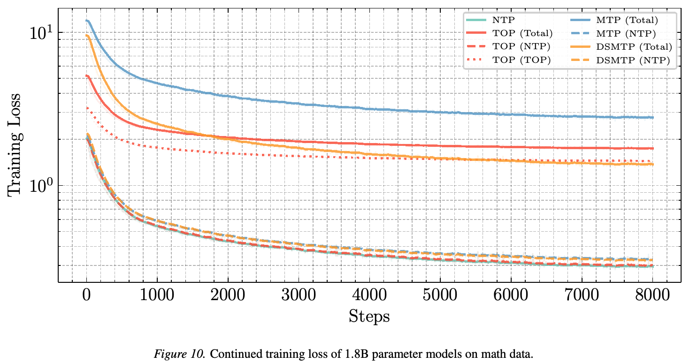
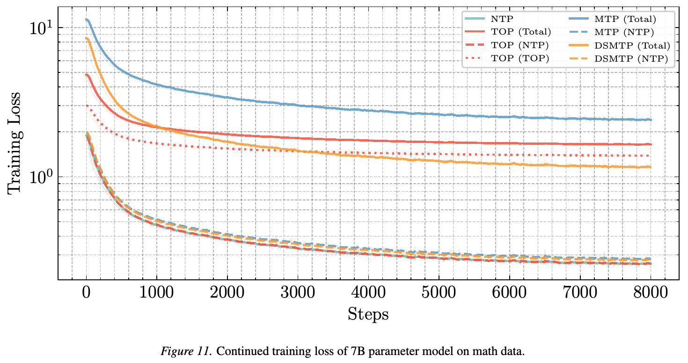